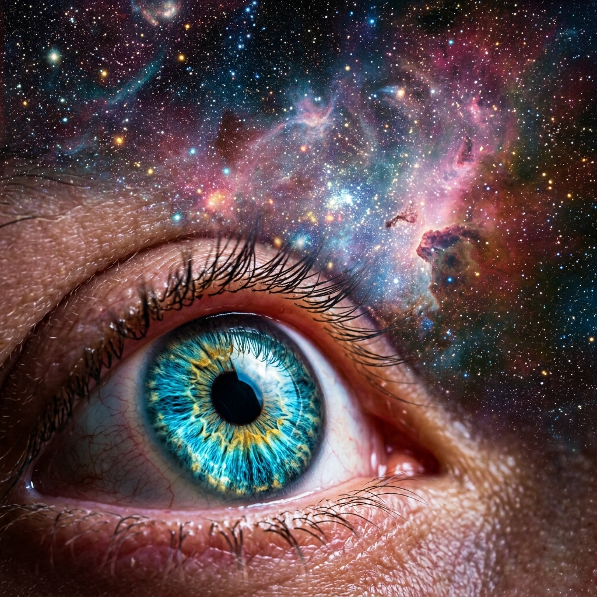

The Origin Chapter · Masterclass
IS GOD
REAL?
When Belief Was No Longer Enough
At some point, reality stops feeling neutral. It starts feeling structured. Something that is speaking. The question is no longer whether God is real — it is whether you are willing to respond.
🔑 The One-Line Thesis
You are not simply a biological machine programmed to ask questions about its programming. You are the universe looking at itself — and you have been sitting inside the evidence the entire time.
📜 The Core Scripture
"For since the creation of the world God's invisible qualities — his eternal power and divine nature — have been clearly seen, being understood from what has been made, so that people are without excuse."
— ROMANS 1:20
TAP: THE WEIGHT OF "WITHOUT EXCUSE"
The verse does not say the evidence is hidden. It says God's invisible qualities have been clearly seen — using the structures of the created world as the medium of revelation. To stand before an engineered eye, a self-aware consciousness, and a coded language inside every living cell — and declare it all accident — is not a position of evidence. It is a position of will.
🗺 The Architecture of Reality — Framework Map
Tap any node to trace the journey from assumption to inescapable evidence.
THE HONEST QUESTIONS THAT REFUSED TO LEAVE
THE THREE PILLARS OF OBSERVABLE EVIDENCE
THE LOGIC CHAIN: FROM STRUCTURE TO PERSON
🧩 Experiential Deep-Dives & Labs
I. THE ENGINEERED MARVEL OF SIGHT
Light enters through the cornea — a transparent dome curved at precisely the right angle. It passes through the lens to the retina, packed into an area smaller than a postage stamp with 120 million rod cells and 6 million cone cells. Those signals travel along over one million individual nerve fibres to the visual cortex — all in milliseconds, continuously, since the day you were born.
If the retina were displaced by even a fraction of a millimetre, the image would blur beyond recognition. Every component is calibrated to every other with a precision that makes the finest human engineering look approximate.
CALIBRATE RETINAL ALIGNMENT
Evolution calls this an accident. Observation calls it Architecture.
II. THE BRAIN AND THE SEAT OF CONSCIOUSNESS
Eighty-six billion neurons. Synaptic junctions numbering in the hundreds of trillions — surpassing in connective complexity the total number of stars in the observable universe. We can map the electricity. But neuroscience has no answer — not tentative, not partial — to how matter feels. How does a firing neuron become grief, awe, or love?
A rock is matter and it is not aware. A river is matter and energy in motion, and it is not aware. But you are matter that knows it is matter. That refusal to be satisfied with mere function is not a biological feature. It is the signature of a soul.
III. THE LANGUAGE OF DNA
DNA is a four-letter molecular alphabet arranged into three-billion-letter sequences — a complete instructional blueprint for building, maintaining, and reproducing a human being. It is coded, functional, context-sensitive, hierarchically organised information. When you see a written message, you do not assume the letters arranged themselves. You assume a mind.
The presence of language implies a speaker. The presence of code implies a programmer. Yet here is the most complex information system ever observed — and the dominant explanation asks us to believe it assembled itself.
A C G T A C G
⚠️ The Illusion of Neutrality
The greatest failure in discernment is believing that ignoring the evidence is a neutral position. Reality itself is speaking. An Architect is not necessarily a Father, but the hunger of your heart—the desire for meaning and love—points directly to a Person. God did not build you and walk away. He built you to know Him.
🪞 Reflection — The Self-Audit
Are you living in the safety of external tradition (doing the right things in church), while internally observing from behind glass with a 'just-in-case' mindset?
🔥 The Closing Declaration
THE MANDATE ACCEPTED
"I will no longer observe from behind glass. I recognise the signature of the Architect in the structure of reality. I am not an accident. I respond to the truth that is speaking."